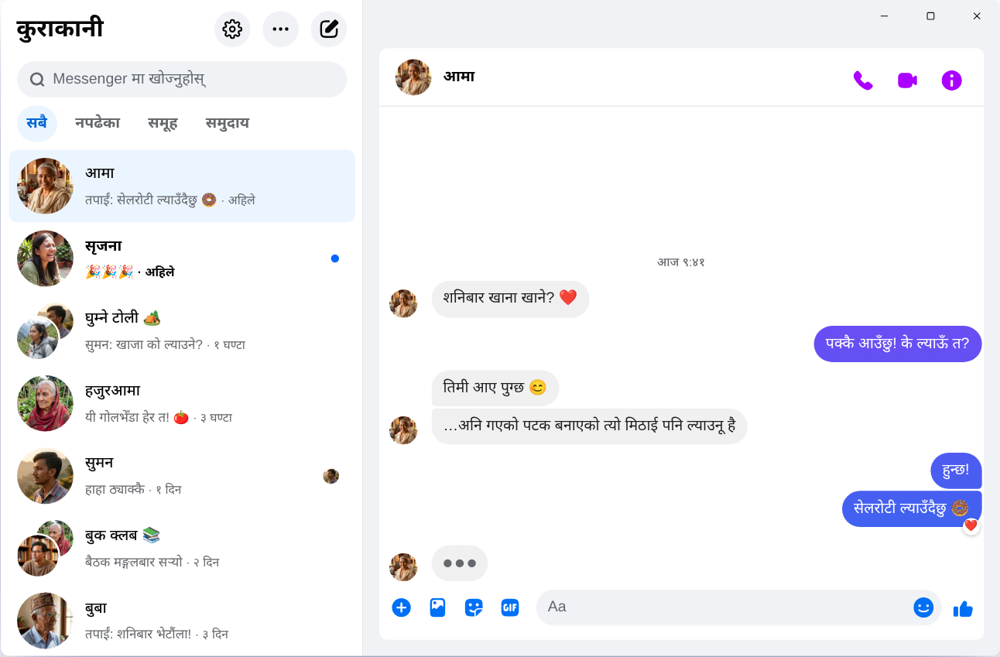

Chatpane / Windows
नोभेम्बर २०२६ मा अद्यावधिक
२०२६ मा कम्प्युटर वा ल्यापटपमा Messenger कसरी चलाउने
Meta ले १५ डिसेम्बर २०२५ देखि Windows को Messenger एप बन्द गर्यो, र messenger.com ले अब तपाईंलाई Facebook मा पठाउँछ। Windows 10 वा 11 चल्ने कम्प्युटर र ल्यापटपमा अहिले के चल्छ, यहाँ हेर्नुहोस्।
निःशुल्क र खुला स्रोत · Windows 10 र 11 · Meta को एप होइन
छोटो जवाफ
कम्प्युटरका लागि Messenger को आधिकारिक एप अब छैन। Meta ले यसलाई Microsoft Store बाट हटायो, र अप्रिल २०२६ देखि कम्प्युटरमा Messenger केवल facebook.com/messages मा, Facebook भित्र चल्छ।
फिड र Reels बिना Messenger आफ्नै छुट्टै विन्डोमा चाहिन्छ भने Chatpane छ: Windows का लागि निःशुल्क, खुला स्रोत एप, जसले तपाईंका कुराकानी मात्र खोल्छ। यो स्वतन्त्र परियोजना हो, Meta को होइन।
पुराना गाइड र इन्स्टलरले किन काम गर्दैनन्
धेरै पुराना गाइडले अझै Microsoft Store मा "Messenger" खोज्न भन्छन्, वा कुनै डाउनलोड साइटबाट Messenger 2250.1 को इन्स्टलर लिन भन्छन्। अब त्यसले काम गर्दैन: त्यो त्यही एप हो जुन Meta ले डिसेम्बर २०२५ मा बन्द गर्यो। खोल्दा त्यसले सिधै Facebook मा पठाउँछ।
कतिपय गाइडले BlueStacks जस्ता Android इमुलेटरमा फोनकै Messenger चलाउन सुझाउँछन्। यसो गर्दा कुराकानीका लागि मात्र कम्प्युटरमा पूरै Android प्रणाली चलाउनुपर्छ।
अनि नचिनेको सफ्टवेयर वा वेबपेजमा आफ्नो Facebook पासवर्ड कहिल्यै नहाल्नुहोस्। कसैले आफ्नै लगइन पेज भएको "कम्प्युटरका लागि Messenger" दिन्छ भने सतर्क रहनुहोस्।
Windows को Messenger लाई के भयो?
२०२४ मा Meta ले Windows एपलाई प्याकेज गरिएको वेब एपले बदल्यो। अक्टोबर २०२५ मा एप बन्द गर्ने घोषणा गर्दै Microsoft Store बाट हटायो, र १५ डिसेम्बर २०२५ देखि एपले काम गर्न छोड्यो। अप्रिल २०२६ मा messenger.com पनि बन्द भयो। पूरा विवरण र मितिहरू Messenger डेस्कटप एप बन्द: के भयो मा पढ्नुहोस्।
तपाईंका विकल्प
Windows मा Messenger चलाउने तरिका
Windows मा Chatpane
Chatpane ले ब्राउजरमा देख्ने त्यही Messenger खोल्छ, त्यसैले तपाईंका कुराकानी, समूह, कल र फोटो सबै त्यहीं हुन्छन् र फोनसँग सिंक हुन्छन्। हटाइने भनेको Facebook का बाँकी कुरा मात्र हुन्।
- Messenger मात्र। Facebook को फिड, Reels, Marketplace र खोज लुकाइएका हुन्छन्।
- काम लाग्ने सूचना। विन्डो नखोली सूचनाबाटै जवाफ दिनुहोस्, रिएक्ट गर्नुहोस्, पढिसकेको चिन्ह लगाउनुहोस् वा म्युट गर्नुहोस्। काम गर्दै गर्दा विदेशमा रहेका परिवार र साथीहरूको सन्देश छुट्दैन।
- टास्कबार र सिस्टम ट्रे। आइकनमा नपढेका सन्देशको संख्या, Windows सँगै आफैं सुरु हुने, र विन्डो बन्द गर्दा पनि ट्रेमा चलिरहने विकल्प।
- गोपनीयता। टाइप गर्दै गरेको लुकाउनुहोस्, स्क्रिन सेयर गर्दा नाम र प्रोफाइल फोटो लुकाउनुहोस्, र Facebook का एनालिटिक्स अनुरोध रोक्नुहोस् (पूर्वनिर्धारित रूपमा सक्रिय)।
- नेपालीमा। Chatpane का मेनु र सेटिङ नेपालीमा अनुवाद गरिएका छन्, र यसले कम्प्युटरको भाषा पछ्याउँछ। तपाईंको Windows अङ्ग्रेजीमा छ भने Settings → General → Language मा गएर नेपाली छान्नुहोस्।

कसरी इन्स्टल गर्ने
- Windows इन्स्टलर डाउनलोड गर्नुहोस्। तपाईंको कम्प्युटरमा ARM प्रोसेसर छ भने ARM64 इन्स्टलर लिनुहोस्।
- फाइल खोल्नुहोस्। Chatpane का Windows इन्स्टलरमा अझै डिजिटल हस्ताक्षर छैन, त्यसैले SmartScreen ले "Windows protected your PC" देखाउन सक्छ। "More info" मा क्लिक गरेर "Run anyway" मा क्लिक गर्नुहोस्। Chatpane chatpane.app वा GitHub बाट मात्र डाउनलोड गर्नुहोस्।
- सधैंको Facebook खाताबाट लग इन गर्नुहोस्। तपाईंका कुराकानी तुरुन्तै देखिन्छन्।
अफिस वा साझा कम्प्युटरमा केही इन्स्टल गर्न दिँदैन? पोर्टेबल संस्करण (.zip) इन्स्टल नगरी चल्छ।
प्रश्नोत्तर
कम्प्युटरमा Messenger बारे प्रश्न
Chatpane निःशुल्क हो?
हो। न मूल्य, न सदस्यता शुल्क, न विज्ञापन। यो MIT इजाजतपत्र अन्तर्गत खुला स्रोत हो, र यसको कोड GitHub मा सार्वजनिक छ, जसले पनि जाँच्न सक्छ।
यो Messenger को आधिकारिक एप हो?
होइन। Chatpane एउटा स्वतन्त्र परियोजना हो, Meta सँग यसको कुनै सम्बन्ध छैन। यसले facebook.com/messages को साँच्चैको Messenger आफ्नै विन्डोमा देखाउँछ, त्यसैले तपाईंका सन्देश Messenger मार्फत नै जान्छन् र Meta का सर्तहरू नै लागू हुन्छन्।
Facebook खाता बिना चल्छ?
चल्दैन। अप्रिल २०२६ देखि Meta ले Facebook खाता बिना Messenger फोनको एपमा मात्र चलाउन दिन्छ। कम्प्युटरमा Chatpane होस् वा अरू कुनै तरिका, facebook.com मा लग इन गर्न मिल्ने खाता चाहिन्छ।
Windows 10 मा चल्छ?
चल्छ, Windows 10 र 11 दुवैमा। Chatpane ले Microsoft Edge WebView2 प्रयोग गर्छ, जुन Windows 11 मा पहिल्यै हुन्छ। Windows 10 मा छैन भने इन्स्टलरले आफैं डाउनलोड गर्छ।
भिडियो कल गर्न मिल्छ?
मिल्छ। यो पूरै Messenger हो, त्यसैले भ्वाइस र भिडियो कल facebook.com मा जस्तै आफ्नै छुट्टै विन्डोमा खुल्छन्। विदेशमा रहेका परिवारसँग ठूलो स्क्रिनमा भिडियो कल गर्न पनि मिल्छ।
Chatpane लिनुहोस्
निःशुल्क र खुला स्रोत। सेकेन्डमै डाउनलोड हुन्छ - पूरै एप करिब ४ MB को मात्र छ।
पुरानो Intel Mac? Intel .dmg
चेकसमसहितको पूरा सूची
GitHub मा छ
- वा brew install --cask kristofferR/tap/chatpane